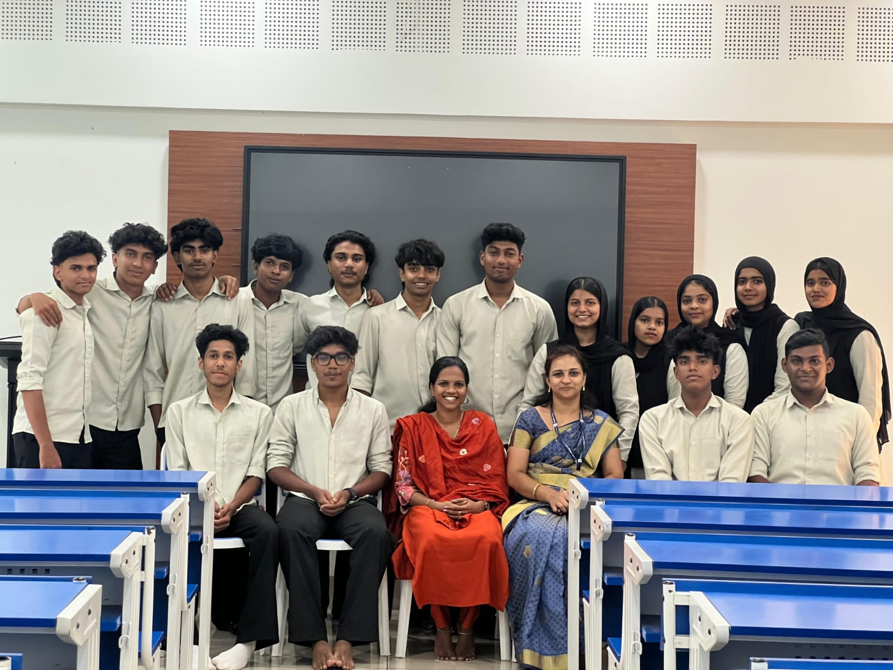

Seetha Miss
Head of Department★ Official Portal
Computer
Science
Dept.
Welcome to the official Computer Science Department portal — a student-built digital hub for resources, events, insights, forum discussions, and academic updates.
Together We Learn✦ Code · Create · Collaborate✦ Innovation Is The Key✦ Computer Science Department✦ Together We Rise✦ Student-Built Department Portal
Grace Valley · The Department Platform
Join a Lab.
Start a Build.
Complete assignments. Explore resources. Attend events. Ask questions. Every part of this portal is designed to keep the batch connected.
CS DEPARTMENT — PHASE TWOThe Batch Is Online
Awareness, unity, labs, materials, and student collaboration in one clean portal.
View Resources →The Start
About
Us.
Welcome to the digital hub of the Computer Science Department at Grace Valley College. We are dedicated to fostering a dynamic and innovative learning environment where students can explore the frontiers of technology and develop critical problem-solving skills.
Our department is built on a foundation of rigorous academics, hands-on projects, and collaborative research. We strive to cultivate a community of forward-thinking creators and future leaders who are prepared to leverage technology to solve real-world challenges and build impactful careers in the ever-evolving world of computer science.

The Faculty Board
Teachers & Handlers.
Suhani Miss
Tutor And Major HandlerRamya Miss
Minor 3 HandlerRamshi Miss
Minor 4 HandlerClass Register
Our Students.
Abdul Rashid M
Reg No : GVAZSCS001
Ajmal NT
Reg No : GVAZSCS002
Anshif Hyder
Reg No : GVAZSCS003
Fathima Hannin MP
Reg No : GVAZSCS004
Fathima Hanna
Reg No : GVAZSCS005
Fathima Huda PC
Reg No : GVAZSCS006
Jasfal C
Reg No : GVAZSCS007
Jumana Jebin M
Reg No : GVAZSCS008
Mohammed Fadil
Reg No : GVAZSCS009
Mohammed Shaheer
Reg No : GVAZSCS010
Mohammed Sinan CK
Reg No : GVAZSCS011
Muhammed Shamil K
Reg No : GVAZSCS012
Muhammed Aflah A
Reg No : GVAZSCS013
Muhammed Bazilsha
Reg No : GVAZSCS014
Muhammed Razique
Reg No : GVAZSCS015
Muhammed Sinan NK
Reg No : GVAZSCS016
Munshifa P
Reg No : GVAZSCS017
Safna Sheri AT
Reg No : GVAZSCS018
Shamnad PK
Reg No : GVAZSCS019
Shelshal Jubin
Reg No : GVAZSCS020
LEARN THROUGH ASKING.
keep things bold. Join the batch, use the portal, and build the future.
Raise Your First Query →